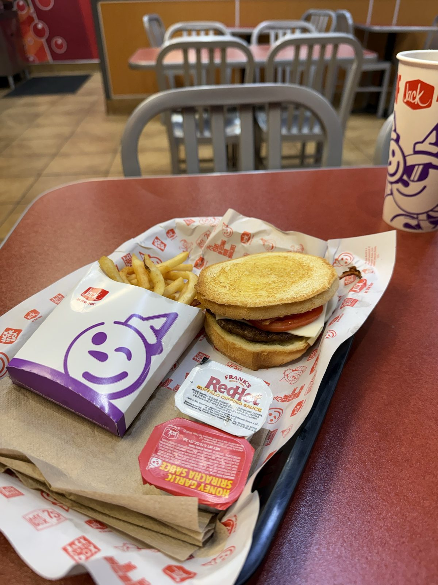
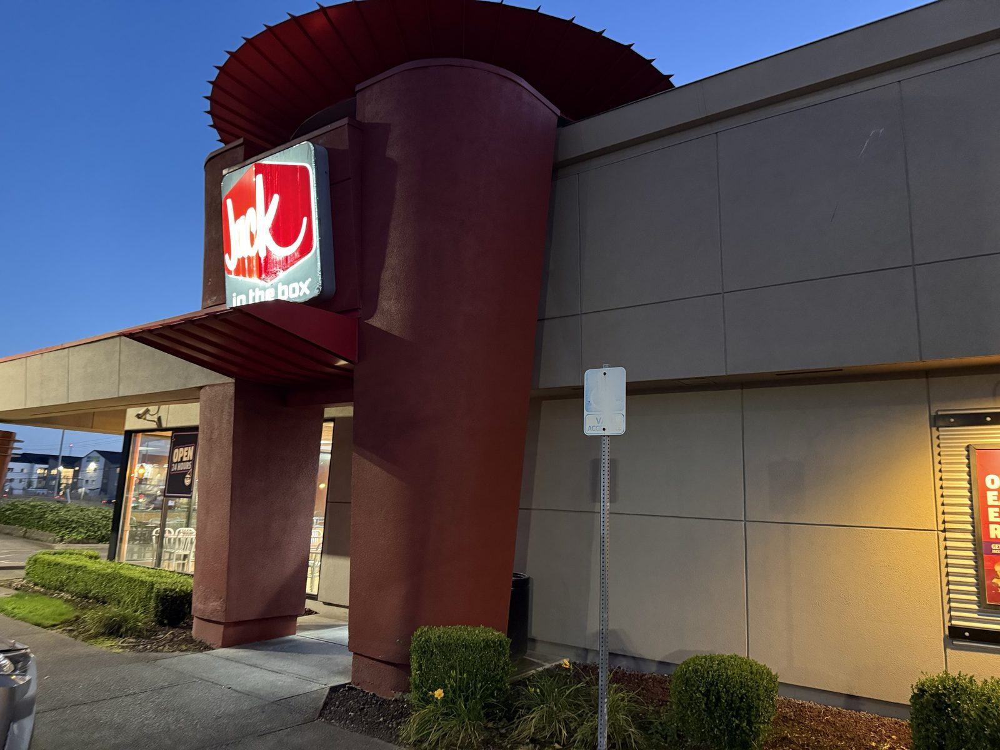
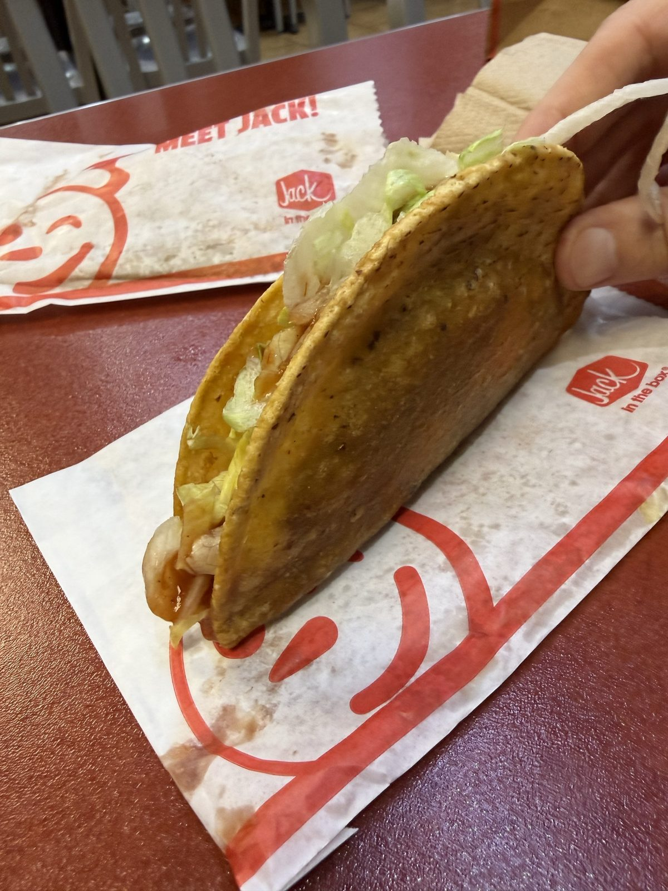

The Cheapest Tacos on the Planet (Possibly Not Beef)

Decent fast food. That's the whole review, really, before I dress it up with anything else — Jack in the Box, the location on NE 117th in Vancouver, Washington, on a Friday night when nobody in the car wanted to cook. Three out of five, which on this site means glad I went, not I'd cross town for it. This is how a lot of Americans actually eat on a busy night: not because the food is a destination, but because the drive-thru is open, the order takes ninety seconds, and the alternative is doing dishes.

The Sourdough Jack
My order, and the one I'd order again: the Sourdough Jack, a beef patty with bacon, tomato, onion and a cheese sauce pressed between two toasted sourdough slices instead of a bun. It's item #1 on the burger board for a reason — the sourdough is the whole trick, toasted enough to hold up to the sauce without going soft, and it's a genuinely different sandwich from the usual bun-patty-cheese stack the rest of the menu runs on. Fries on the side, and a couple of the newer sauce packets — Frank's RedHot buffalo and a honey garlic sriracha — sitting there mostly unused, because the sandwich didn't need help.
The tacos, and whether they're beef
Two tacos for under two dollars is close to the cheapest hot food you can buy anywhere in this country, and Jack in the Box has been selling them at some version of that price since the chain's first location opened in San Diego in 1951 — the taco predates the modern burger menu, not the other way around. Holding one up under the dining-room lights, the question that comes to mind first isn't "is this good" so much as "what is this," and it turns out that's a fair question to ask.

Jack in the Box's own published ingredient statement lists beef first, followed by water, textured vegetable protein made from soy, and defatted soy grits, with a seasoning blend doing the rest of the work. So it is beef — just not only beef, and the company has never once called them "beef tacos" on a menu board, which is exactly the kind of quiet omission that starts a decades-long joke. The soy protein is there to stretch the filling and hold its shape at the price point, not to hide anything, but the texture is genuinely a little different from what you'd get out of a taco truck, and that's real, not imagined.
The tacos are probably the cheapest way you can eat on the planet. I'm just not sure they're made out of beef.
Is Jack in the Box worth it?
For what it's built to do — feed you fast, feed you cheap, feed you at 2 a.m. if that's when you're hungry — yes. This location runs close to around the clock, and a Sourdough Jack combo lands well under what a sit-down burger costs anywhere nearby. It isn't trying to be In-N-Out, and measured against that bar it doesn't come close; measured against "I need dinner and I have fifteen minutes," it does the job every time.
The practical bit
Jack in the Box — 7205 NE 117th Ave, Vancouver, Washington 98662. 📍 Get directions
Hours: effectively 24 hours — posted as 4:30 AM to 4:00 AM, seven days a week, full menu including breakfast all day.
What things cost, from the board on 21 August 2026: Sourdough Jack $12.99 as a combo, $9.99 as a sandwich alone · two tacos $1.99 · Jumbo Jack tacos (5) $5.00 · Double Jack combo $13.49.